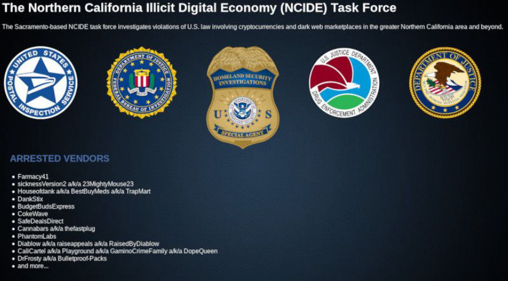
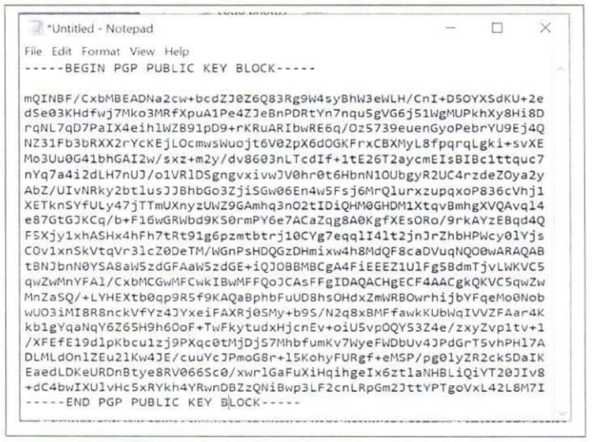
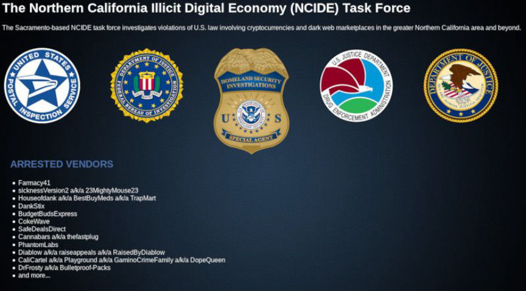
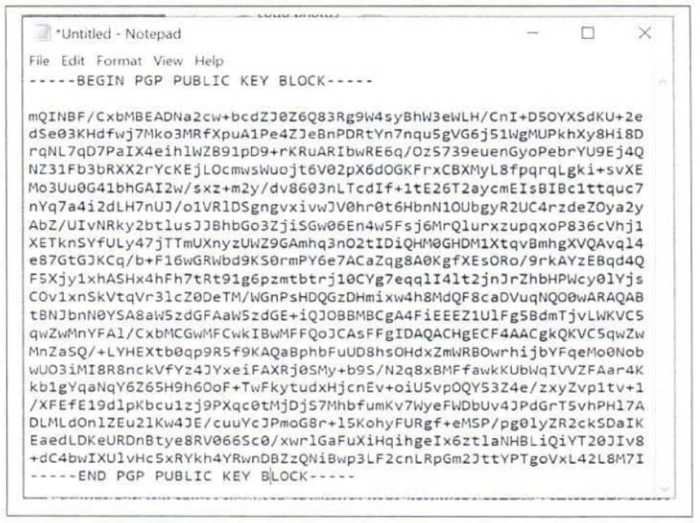

Dream Vendor 1nolefb1 Found Guilty of Drug Distribution
~2 min read | Published on 2021-08-10, tagged Darkweb-Vendor, Drug-Bust, Drugs, Sentenced using 387 words.
A jury found a Connecticut man guilty of distributing fentanyl analogues through the darkweb.
Barry Duclos 42, of Norwich, Connecticut, was, according to court documents, convicted of multiple counts of distribution of fentanyl analogues as well as related charges. Prosecutors established that Duclos had operated the vendor account “1nolefb1” on Dream Market.
Evidence presented during the trial that began on July 21, 2021, showed that Duclos had operated the “1nolefb1” vendor account on Dream Market from at least September 2017 through February 2018. Duclos sold fentanyl analogues to users throughout the United States via the United States Postal Service.
Law enforcement officers arrested Duclos at his residence on February 12, 2018. A search conducted at the residence resulted in the seizure of undisclosed quantities of fentanyl, carfentanil, and a laptop. The arresting officers also found and seized a rifle with multiple magazines. (United States law forbids possession of a firearm during certain crimes, including drug trafficking as well as possession of firearms by most convicted felons.)
An indictment charged Duclos with one count of possession with intent to distribute, and distribution of, at least 10 grams of fentanyl and fentanyl analogues, eight counts of possession with intent to distribute, and distribution of, fentanyl analogues, one count of possession of a firearm by a convicted felon, and one count of possession of a firearm in furtherance of a drug trafficking operation.
On July 30, 2021, a federal jury found Duclos guilty of seven counts of possession with intent to distribute and distribution of fentanyl analogues; one count of possession with intent to distribute fentanyl and carfentanil; one count of possession of ammunition by a convicted felon; and one count possession of a firearm in furtherance of a drug trafficking operation.

Duclos, like many darkweb drug traffickers, had a prior conviction for drug trafficking (and also theft). Duclos has been in custody since his arrest. The court, at the time of writing, had not scheduled a sentencing hearing.
DNL note: Duclos made some interesting mistakes, such as registering an account with the Postal Service under the username 1NOLEFB1. The user ID for the vendor’s PGP key was, as noted by a Postal Inspector, " BDs Key" which investigators believed stood for “Barry Duclos.”

Barry Duclos 42, of Norwich, Connecticut, was, according to court documents, convicted of multiple counts of distribution of fentanyl analogues as well as related charges. Prosecutors established that Duclos had operated the vendor account “1nolefb1” on Dream Market.
Evidence presented during the trial that began on July 21, 2021, showed that Duclos had operated the “1nolefb1” vendor account on Dream Market from at least September 2017 through February 2018. Duclos sold fentanyl analogues to users throughout the United States via the United States Postal Service.
Law enforcement officers arrested Duclos at his residence on February 12, 2018. A search conducted at the residence resulted in the seizure of undisclosed quantities of fentanyl, carfentanil, and a laptop. The arresting officers also found and seized a rifle with multiple magazines. (United States law forbids possession of a firearm during certain crimes, including drug trafficking as well as possession of firearms by most convicted felons.)
An indictment charged Duclos with one count of possession with intent to distribute, and distribution of, at least 10 grams of fentanyl and fentanyl analogues, eight counts of possession with intent to distribute, and distribution of, fentanyl analogues, one count of possession of a firearm by a convicted felon, and one count of possession of a firearm in furtherance of a drug trafficking operation.
On July 30, 2021, a federal jury found Duclos guilty of seven counts of possession with intent to distribute and distribution of fentanyl analogues; one count of possession with intent to distribute fentanyl and carfentanil; one count of possession of ammunition by a convicted felon; and one count possession of a firearm in furtherance of a drug trafficking operation.

Duclos provided prosecutors with proffered information yet pleaded not guilty and went to trial?
Duclos, like many darkweb drug traffickers, had a prior conviction for drug trafficking (and also theft). Duclos has been in custody since his arrest. The court, at the time of writing, had not scheduled a sentencing hearing.
DNL note: Duclos made some interesting mistakes, such as registering an account with the Postal Service under the username 1NOLEFB1. The user ID for the vendor’s PGP key was, as noted by a Postal Inspector, " BDs Key" which investigators believed stood for “Barry Duclos.”

Postal Inspectors noticed the user ID assosciated with 1NOLEFB1's PGP key